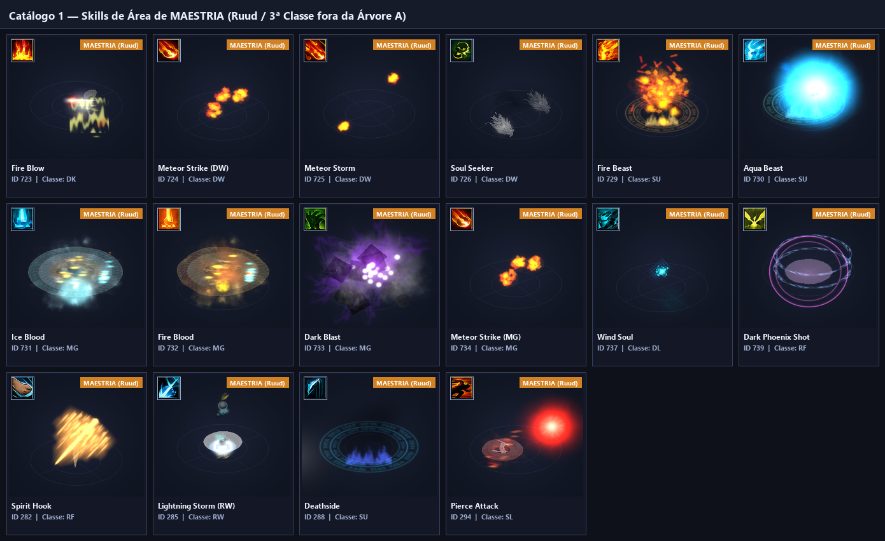
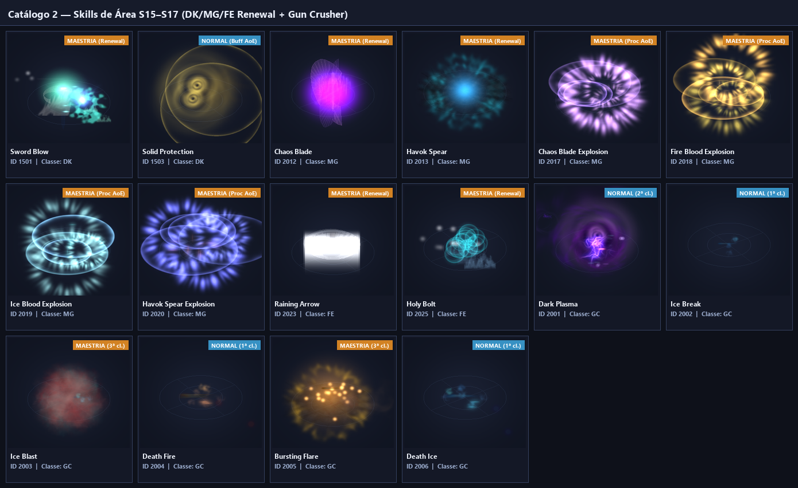
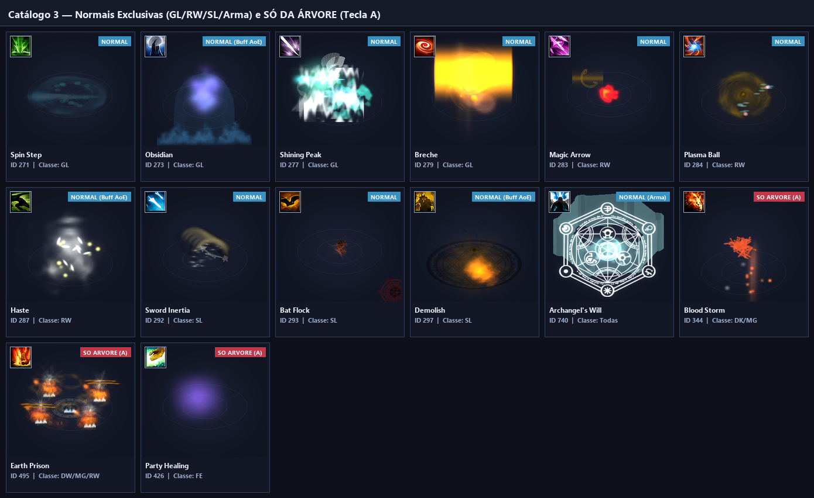
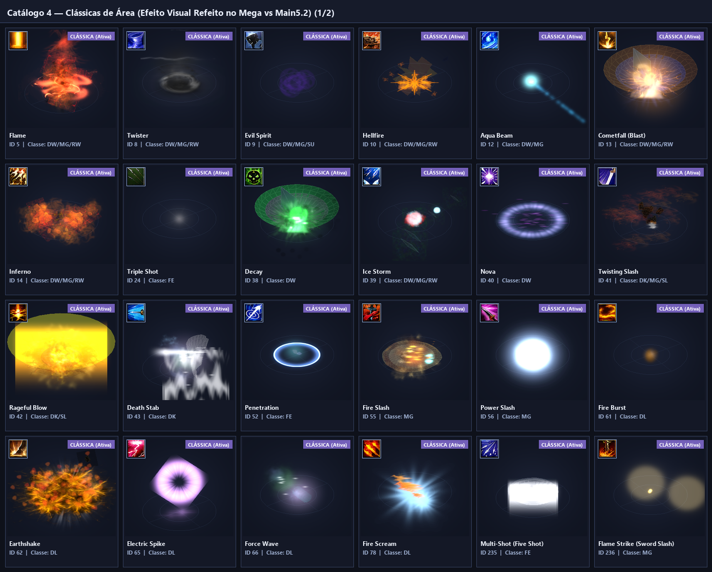
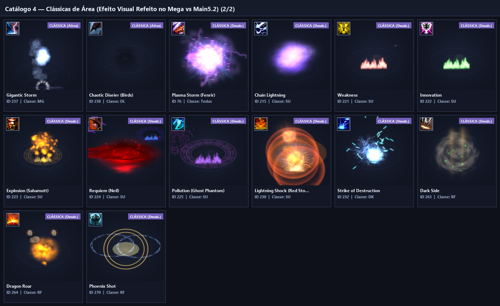

Skills de área do Mega
Skills de área que o Mega tem e o seu client não tem (ou tem sem o efeito). Levantamento do Antigravity (R1924).
Resposta: na maioria são de MAESTRIA ou normais, e não da árvore. São 46 skills:
- 16 de maestria (3ª classe; aprendidas por orb, scroll ou bead, fora da árvore).
- 16 da linha Renewal: 10 de maestria (DK, MG, FE, GC, incluindo as 4 explosões radiais de Charge do MG) e 6 normais (DK e GC).
- 11 normais de classes só do Mega (Grow Lancer, Rune Wizard, Slayer), mais a Archangel's Will (skill de arma).
- Só 3 existem só na árvore (A): Blood Storm, Earth Prison e Party Healing. Como você não quer a árvore, ficam marcadas.
Para responder: diga quais efeitos quer portar.
Maestria

Renewal

Normais e da árvore

Clássicas refeitas no Mega

